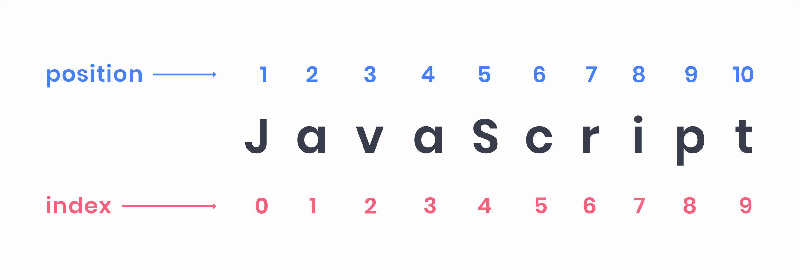
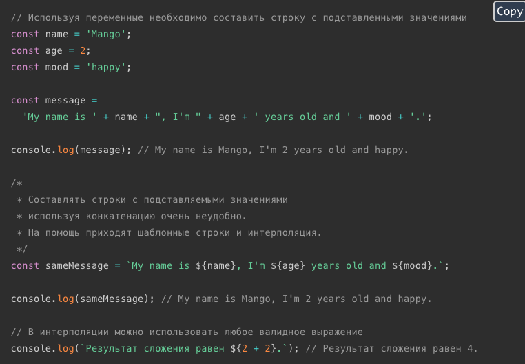
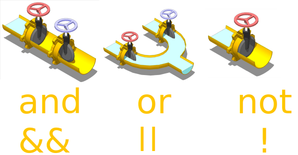
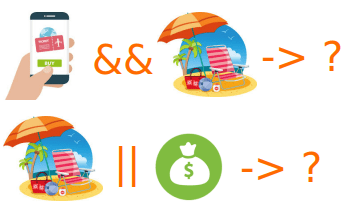
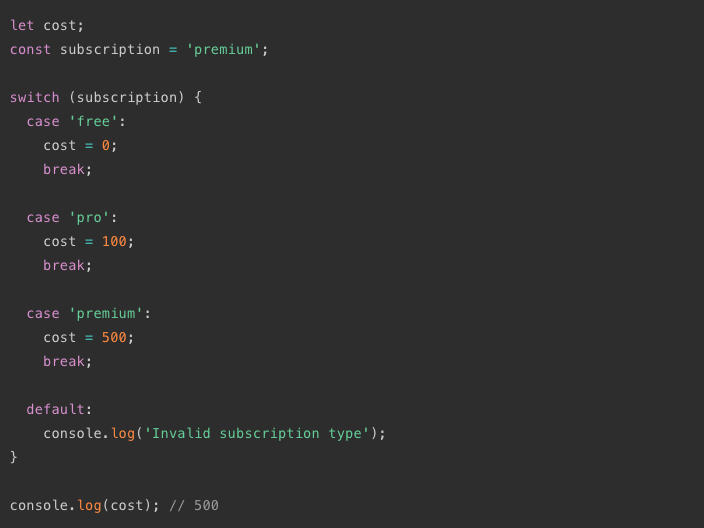
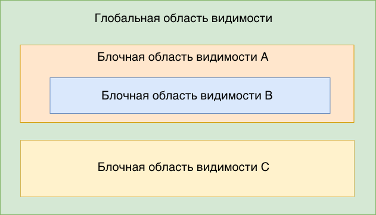

ИСХОДНЫЙ КОД (source code) - набор фраз, слов, специальных символов и т.д. специфичных для языка программирования,описывающих набор инструкций для компьютера.
Но эти символы, слова и фразы на самом деле непонятны для машины. Есть спец программа: колмпилятор или интерпретатор, которые конвертируют исходный код в набор инструкций, понятных компьютеру.
Опытные разработчики рассматривают проблемы с точки зрения алгоритмов - набора шагов, которые нужно выполнить для достижения определенной цели, даже если детали меняются.
Главное привыкнуть выстраивать решение задач в виде алгоритма.
Javascript - результат спецификации EcmaScript, высокоуровневый язык программирования. Изначально предназначался для взаимодействия с эл-тами веб-страниц и добавления интерактивности.
В фронт-энд разработке JS используется с HTML и CSS для следующих задач:
Если JavaScript-код пишется для исполнения в браузере (Front-end), у разработчика нет инструментов и доступа к файловой или операционной системе по соображениям безопасности.
На сегодняшний день с помощью JS можно создавать:
Инструкция (statement) — это связанный набор слов и символов из синтаксиса языка, которые объединяются, чтобы выразить одну идею, одну инструкцию для машины.
a = b * 2;Это пример инструкции. В JavaScript можно различить инструкцию по точке с запятой в конце.
Представим что переменная b уже хранит число 10. Тогда эта инструкция говорит машине:
Инструкции состоят из частей, как в любом языке предложения состоят из фраз, и эти фразы называются выражениями.
Выражение (expression) — ссылка на переменную или значение, или на набор переменных и значений в сочетании с операторами.
[ [a] = [ [b] * [2] ] ]Инструкция из примера выше содержит 5 выражений, для визуализации выделены квадратными скобками (это не синтаксис языка):
Так же есть выражения вызова, выражения сравнения и т. д.
Элементы управления, с которыми можно взаимодействовать называются ИНТЕРФЕЙС.
Интерфейс — это набор свойств и методов сущности, доступных для использования.
У данных есть свойства, к примеру у строки есть свойство ее длины.
Для наглядности, обратимся к свойству строки length, которое содержит кол-во символов строки.
'JavaScript is awesome'.length;МЕТОД - это вызов действия. то есть какая-то активная операция. Так же и у данных есть свои методы, например можно добавить или удалить элементы из коллекции, перевести строку в разный регистр и т. д. Синтаксис вызова метода очень похож на обращение к свойству, но в конце добавляется пара скобок.
сущность.имя_метода()Для примера обратимся к методу строки toUpperCase(), который сделает все буквы заглавными.
'JavaScript is awesome'.toUpperCase();Переменные используются для хранения данных и состоят из идентификатора (имени) и области в памяти, где хранится их значение. Переменную можно представить как коробку с названием, в которой что-то лежит (значение).
Есть список зарезервированных ключевых слов, которые имеют специальное значение и используются для определенных конструкций. Нельзя использовать ключевые слова как идентификаторы.
Таблица зарезервырованных словВ современном JavaScript есть 2 ключевых слова для объявления переменных.
Eсли перемнной объявленной как let, изначально не присвоено значение,
она инициализируется специальным значением undefined (не определено).
console.log(age); // undefined
Если переменная объявлена как let, ее значение можно перезаписать.
*/
age = 14;
console.log(age); // 14
Если попробовать перезаписать const переменную, то консоль выдаст ошибку.
Имена КОНСТАНТ - переменных, значение которых не изменяется никогда на протяжении работы всего скрипта, обычно записываются в формате UPPER_SNAKE_CASE.
// Константа хранящая значение цвета
const COLOR_TEAL = '#009688';
// Константа хранящая сообщение о авторизации
const MESSAGE_LOGIN_SUCCESS = 'Добро пожаловать!';
Важно различать неопределенные и необъявленные переменные.
let name;
* Переменная name объявлена, но не инициализирована, поэтому
* ее значение undefined (не определено), тогда как переменная age
* не была объявлена, поэтому доступ к ней вызывает ошибку ReferenceError
*/
console.log(name); // undefined
console.log(age); // ReferenceError: age is not defined
JavaScript это динамический, слабо типизированный язык.
Поэтому переменные не различаются по типу данных. Но по типу данных различаются значения переменных!
Целые числа и числа с плавающей запятой.
После объявления переменной, можно инициализировать ее числовым значением.
const age = 20;
Строки это просто текст, последовательность из нуля или более символов.
Строка начинается и заканчивается одиночной ', или двойными кавычками ".
Открывающая и закрывающая кавычки должны быть одинаковые.
const name = 'Mango';
Логический тип данных, флаги состояния. Имеет только два значения: true и false, в нижнем регистре. Например на вопрос включен ли свет в комнате можно ответить да (true) или нет (false).
Обратите внимание на имена переменных содержащих буль. Они задают вопрос, и ответ на его — да или нет.
const isAuthenticated = true;
const canMerge = false;
const hasChildren = true;
const isModalOpen = false;
Особое значение, которое по сути значит ничто. Используется в тех ситуациях, когда необходимо явно указать отсутсвие значения. К примеру если в базе данных не нашли пользователя, то можно сказать что значение null.
Еще одно специальное значение. По умолчанию, когда переменная объявляется,
но не инициализируется, ее значение не определено, ей присваивается undefined.
let name;
console.log(name); // undefined
Для получения типа значения переменной, используется оператор typeof, который возвращает на место своего вызова тип значения переменной указанного после него. Возвращаемое значение это просто строка в которой указан тип.
// undefined
let a;
console.log(typeof a); // "undefined"
// null
const b = null;
console.log(typeof null); // "object"
// Number
const c = 5;
console.log(typeof c); // "number"
// String
const d = 'JavaScript is awesome!';
console.log(typeof d); // "string"
// Boolean
const e = false;
console.log(typeof e); // "boolean"
const message = 'JavaScript is awesome!';
console.log(message); // JavaScript is awesome!
const name = 'Mango';
console.log('My name is: ', name); // My name is: Mango
/*
* Можно сначала указать какую-то произвольную строку,
* к примеру описывающую переменную или дополняющую ее, после чего
* поставить запятую и указать имя переменной
*/
Для получения данных от пользователя будем использовать prompt() и confirm(), это тоже методы из интерфейса window. Их особенность в том, что результатом своего выполнения они возвращают то, что было введено пользователем. Результат их работы можно записать в переменную для дальнейшего использования.
confirm() — выводит модальное окно с сообщением, и 2 кнопки, Ok и Cancel. При нажатии на Ok, на место вызова функции возвращается true, при нажатии на Cancel возвращается false.
const isComing = confirm('Please confirm hotel reservation');
console.log(isComing);
prompt() — выводит модальное окно с полем ввода и кнопками Ok и Cancel.
При Ok возвращает то, что было введено в поле ввода, при Cancel возвращает null.
const hotelName = prompt('Please enter desired hotel name:');
console.log(hotelName);
/*
* Важная особенность prompt в том, что не зависимо что ввел пользователь,
* всегда вернется строка. Тоесть если пользователь ввел 5, то вернется
* не число 5, а строка "5". Об этом необходимо всегда помнить.
const value = prompt('Please enter a number!');
console.log(typeof value); // 'string'
console.log(value); // '5'
Важно запомнить правильное именование составляющих выражения. + - * / % называются операторами, а то на чем они применяются операндами.
Используются для сравнения значений. Результатом своего выполнения возвращают були, true или false.
a > b и a < b - больше/меньшеa >= b и a <= b - больше/меньше или равноЗАПОМНИТЬ что операторы сравнения на выходе выдают Boolean
Всегда используйте строгое равенство === и строгое неравенство !==.
При таком условии всё может быть равно только себе.
При нестрогом неравенстве происходит преобразование типов значения,
т.е. значение number может приравняться к значению string и др.
Все числа в JS имеют тип Number.
Большинство арифметических операций и математических функций преобразуют значение в число автоматически.
Для того чтобы сделать это явно, используйте функцию Number(val),
передавая ей в val то, что надо привести к числу.
Если значние не возможно привести к числу, результатом будет специальное значение NaN (Not a Number).
const valueA = '5';
console.log(Number(valueA)); // 5
console.log(typeof Number(valueA)); // 'number'
const valueB = 'random string';
console.log(Number(valueB)); // NaN
console.log(typeof Number(valueB)); // 'number'
Методы преобразуют строку символ за символом, пока это возможно. При возникновении ошибки возвращается число, которое получилось.
// Парсит из строки целое число
console.log(Number.parseInt('5px')); // 5
console.log(Number.parseInt('12qwe74')); // 12
console.log(Number.parseInt('12.46qwe79')); // 12
console.log(Number.parseInt('qweqwe')); // NaN
// Парсит из строки дробное число
console.log(Number.parseFloat('5px')); // 5
console.log(Number.parseFloat('12qwe74')); // 12
console.log(Number.parseFloat('12.46qwe79')); // 12.46
console.log(Number.parseFloat('qweqwe')); // NaN
Вероятно можно применять как фильтр для какого-то поля ввода данных, чтобы забирать только числовые данные
Для проверки на число можно использовать метод Number.isNaN(val). Он проверяет, является ли указанное значение NaN или нет. Этот метод отвечает на вопрос "Это Not A Number?", и возвращает:
const validNumber = Number('51'); // 51
console.log(Number.isNaN(validNumber)); // false
const invalidNumber = Number('qweqwe'); // NaN
console.log(Number.isNaN(invalidNumber)); // true
При сложении не целых чисел в JavaScript, и других языках программирования, есть особенность. Если кратко, то 0.1 + 0.2 не равно 0.3, результат сложения больше чем 0.3. Все от того что машина считает в двоичной системе.
Число 0.1 в двоичной системе счисления это бесконечная дробь, так как единица на десять в двоичной системе не делится. Также бесконечной дробью является 0.2. Двоичное значение бесконечных дробей хранится только до определенного знака, поэтому возникает неточность. При сложении 0.1 и 0.2, две неточности складываются, получается незначительная, но всё же ошибка в вычислениях.
console.log(0.1 + 0.2 === 0.3); // false
console.log(0.1 + 0.2); // 0.30000000000000004
Конечно, это не означает, что точные вычисления для таких чисел невозможны. Есть несколько методов решения этой проблемы:
// Сделать их целыми, умножив на 10, сложить, а результат разделить на 10
console.log((0.1 * 10 + 0.2 * 10) / 10);
Один из встроенных объектов в язык. Предоставляет набор методов для работы с числами. Знание всех методов наизусть не требуется, только некоторых, наиболее полезных.
// Math.floor(num) - возвращает наибольшее целое число, меньшее, либо равное указанному
console.log(Math.floor(1.7)); // 1
// Math.ceil(num) - возвращает наименьшее целое число,
// большее, либо равное указанному числу.
console.log(Math.ceil(1.2)); // 2
// Math.round(num) - возвращает значение числа, округлённое до ближайшего целого
console.log(Math.round(1.2)); // 1
console.log(Math.round(1.5)); // 2
// Math.max(num1, num2, ...) - возвращает наибольшее число из набора
console.log(Math.max(20, 10, 50, 40)); // 50
// Math.min(num1, num2, ...) - возвращает наименьшее число из набора
console.log(Math.min(20, 10, 50, 40)); // 10
// Math.pow(base, exponent) - возведение в степень
console.log(Math.pow(2, 4)); // 16
// Math.random() - возвращает псевдослучайное число в диапазоне [0, 1)
console.log(Math.random()); // случайное число между 0 и 1
console.log(Math.random() * (10 - 1) + 1); // случайное число от 1 до 10
Строка — это индексированный набор из нуля или более символов, заключенных в одинарные либо двойные кавычки.
const name = 'Mango';
Важно помнить что индексация элементов строки начинается с нуля. К примеру в строке 'JavaScript' буква 'J' стоит на позиции с индексом 0, а 't' идет под индексом 9.
Содержимое строки нельзя изменить. Нельзя взять символ посередине и заменить его. Как только строка создана — она такая навсегда. Можно лишь создать целиком новую строку и присвоить в переменную вместо старой.
Если применить оператор + к строке и любому другому типу данных, результатом операции «сложения» будет строка. Эта операция называется конкатенация, или сложение строк.
Во время конкатенации, любой тип данных приводится к строке и сшивается со строкой, но есть особенность — последовательность записи операндов.
Последовательность операций имеет значение, преобразование типов происходит только в момент операции сложения со строкой, до этого момента действуют привычные правила математики.
const message = 'Mango ' + 'is' + ' happy';
console.log(message); // Mango is happy
// Теперь посмотрим на порядок операндов
let result;
result = 5 + '5';
console.log(result); // '55'
console.log(typeof result); // string
result = 5 + '5' + 5;
console.log(result); // '555'
console.log(typeof result); // string
/*
* Обратите внимание, произошла математическая операция
* сложения для первых двух пятерок, после чего 10 было
* преобразовано в строку '10' и сшито с '5'
*/
result = 5 + 5 + '5';
console.log(result); // '105'
console.log(typeof result); // string
У каждой строки есть встроенные свойства и методы, рассмотрим некоторые из них.
const message = 'Welcome to Bahamas!';
console.log(message.length); // 19
console.log('There is nothing impossible to him who will try'.length); // 47
console.log(message.toLowerCase()); // welcome to bahamas!
console.log(message.toUpperCase()); // WELCOME TO BAHAMAS!
// При этом исходная строка не изменяется
console.log(message); // Welcome to Bahamas!
console.log(message.indexOf('to')); // 8
console.log(message.indexOf('hello')); // -1
// Все методы строк чувствительны к регистру
console.log(message.includes('welcome')); // false
console.log(message.includes('Welcome')); // true
Шаблонные строки это альтернатива конкатенации с более удобным синтаксисом. Они заключены в обратные кавычки вместо двойных или одинарных и могут содержать местозаполнители, которые обозначаются знаком доллара и фигурными скобками.
Любая программа может быть создана на основе нескольких принципов: последовательности выполнения и ветвлений.
Последовательность выполнения - следование записи кода сверху вниз. Но не всегда программа должна выполняться строго последовательно. Для изменения последовательности используются циклы и ветвления.
Ветвления - возможность выполнить ту или иную последовательность кода в зависимости от условия. Условие может быть любым, но результат его проверки всегда будет одним из двух значений true или false.
Компьютер использует бинарный (от латинского bis - дважды) код. Т.е. всего два значения используются для создания любых программ: 0 и 1. Это значит, что условия также задаются в виде 0 (нет, false) и 1 (да, true).
В математике существует раздел булевой логики, в котором условия бинарны, т.е. могут быть представлены в виде 0 и 1, а также в виде слов true и false. Именно эта логика используется для реализации ветвления.
Для того чтобы работала булевая логика необходимо на входе иметь два значения. Поэтому в JavaScript, в логических операциях, осуществляется приведение типов операндов к true или false. Приведение происходит если в коде обнаружен логический оператор.
Truthy и Falsy — термины, которые используются для тех значений, которые в логической операции приводятся к true или false, хотя изначально не были булями.
ВАЖНО ЗАПОМНИТЬЗапомните 6 ложных (falsy) значений, приводящихся к false в логическом преобразовании: 0, NaN, null, undefined, пустая строка: "" или '', false. Абсолютно все остальное приводится к true.
Есть три логических оператора, которые используются для проверки выполнения множественных выражений.
Оператор && приводит все операнды к булю и возвращает одно из значений (операндов). Левый операнд если его можно привести к false, и правый в остальных случаях.
const num = 20;
const result = num > 10 && num < 30;
console.log(result); // true
В коде выше мы проверяем условие: переменная num больше 10 и меньше 30. Так как оба условия вернут true, то и результатом всего выражения будет true.
Для того чтобы оператор && вернул true, требуется чтобы все операнды были истинными (truthy). Если хотябы один из операндов будет приведен к false, то результатом выражения будет этот операнд.
const num = 40;
const result = num > 10 && num < 30;
console.log(result); // false
Оператор || возвращает одно из значений (операндов). Левый операнд если его можно привести к true, и правый в остальных случаях.
const num = 5;
const result = num < 10 || num > 30;
console.log(result); // true
Это тоже будет true так как хотябы один из операндов был приведен к true.
const num = 40;
const result = num < 10 || num > 30;
console.log(result); // true
А тут ни одно из условий не выполняется, поэтому получаем false.
const num = 20;
const result = num < 10 || num > 30;
console.log(result); // false
Оператор ! приводит операнд к булю, если необходимо, а затем заменяет его на противоположный.
console.log(!true); // false
console.log(!false); // true
console.log(!1); // false
console.log(!0); // true
При выполнении логических операций, правый операнд может не вычисляться.
"Купить билет И отдохнуть" - если левый операнд "Купить билет" окажется false, то вычислять второй нет смысла.
"Отдохнуть ИЛИ сохранить деньги" - если левый операнд "Отдохнуть" окажется true, то вычислять второй нет смысла.
Логические операторы не могут самостоятельно управлять потоком выполнения программы, для этого используются ветвления. Все они устроены по одному принципу - входные данные приводятся к булю (true или false) и, в зависимости от результата этого значения, поток программы направляется в ту или иную ветку.

Входные данные, которые приводятся к булевому типу называются условием. Условие помещают за оператором if в круглых скобках. Если условие приводится к true, то выполняется код в фигурных скобках (ветка).
let cost = 0;
const subscription = 'pro';
if (subscription === 'pro') {cost = 100;}
console.log(cost); // 100
Если условие приводится к false, код в фигурных скобках будет пропущен.
let cost = 0;
const subscription = 'free';
if (subscription === 'pro') {cost = 100;}
console.log(cost); // 0

Расширяет синтаксис оператора if тем, что в случае если условие приводится к false, выполнится код в фигурных скобках после оператора else.
let cost;
const subscription = 'free';
if (subscription === 'pro') {
cost = 100;
} else {
cost = 0;
}
console.log(cost); // 0
При true, оператор else и связанный с ним программный блок, игнорируются.
let cost;
const subscription = 'pro';
if (subscription === 'pro') {
cost = 100;
} else {
cost = 0;
}
console.log(cost); // 100

Расширяет синтаксис оператора if...else тем, что после else снова добавляется оператор if. На первый взгляд код из множества подобных вложений кажется сложным. На самом деле все ответвления это результат false на все предыдущие вопросы.
При первом же true проверки прекратятся и выполнится только один сценарий, соотвествующий этому true. Поэтому подобную запись следует читать как: ищу первое совпадение условия, игнорирую все остальное.
let cost;
const subscription = 'premium';
if (subscription === 'free') {
cost = 0;
} else if (subscription === 'pro') {
cost = 100;
} else if (subscription === 'premium') {
cost = 500;
} else {
console.log('Invalid subscription type');
}
console.log(cost); // 500
Есть конструкция, похожая на if...else, с упрощенным синтаксисом,
называемая тернарный оператор (ternary - тройной).
{условие} ? {выражение если условие правдиво} : {выражение если условие не правдиво}
Такая конструкция работает следующим образом:
let type;
const age = 20;
if (age >= 18) {
type = 'adult';
} else {
type = 'child';
}
Перепишем пример используя тернарный оператор.
const age = 20;
const type = age >= 18 ? 'adult' : 'child';
Запишем операцию поиска большего числа.
const num1 = 5;
const num2 = 10;
let biggerNumber;
if (num1 > num2) {
biggerNumber = num1;
} else {
biggerNumber = num2;
}
console.log(biggerNumber); // 10
Код работает верно, получаем большее число из двух, но это решение кажется слишком громоздким, учитывая, насколько проста проблема. Что делать? Используем тернарный оператор.
const num1 = 5;
const num2 = 10;
const biggerNumber = num1 > num2 ? num1 : num2;
console.log(biggerNumber); // 10
Тернарный оператор используется только при простых операциях.
В некоторых случаях сложности чтения логических конструкций можно избежать, используя оператор ветвления switch. Синтаксис этого оператора разбивает условие на общую часть switch и множество отдельных случаев case. Т.е. применимость этого оператора ограничена только задачами с одним общим вопросом и множеством вариантов ответов.

Значение выражения - строка или число, которое сравнивается со всеми значениями case. Если совпадения не произошло, управление передается default. Оператор break в завершении каждого блока case ставят чтобы прервать дальнейшие проверки и сразу перейти к коду за инструкцией switch.
Если оператор break будет отсутствовать, то после того как выполнится какое-то условие case, все последующие за ним блоки кода будут выполняться один за другим, что может привести к нежелательным последствиям при неверном применении.
Область видимости переменных (variable scope) - доступность переменных в определенном месте кода. Есть несколько областей видимости: глобальная, блочная, eval и функции.
Глобальная область видимости используется по умолчанию. Все и вся имеют доступ к переменным объявленным в ней. Переменные объявленные в глобальной области видимости уязвимы, так как их может изменить любой участок кода.
Рассмотрим на примере. Переменная value объявлена в глобальной области видимости, то есть вне какого-то блока, и доступна в любом месте после объявления.
const value = 5;
if (true) {
console.log('Block scope: ', value); // 5
}
console.log('Global scope: ', value); // 5
Любая конструкция использующая фигурные скобки {} (условия, циклы, функции и т. п.) создает новую локальную область видимости, и переменные, объявленные в этой области видимости, используя let или const, не доступны вне этого блока.
if (true) {
const value = 5;
console.log('Block scope: ', value); // 5
}
console.log('Global scope: ', value); // ReferenceError: value is not defined
Глубина вложенности областей видимости не ограничена, и все они буду работать по одному принципу - область видимости имеет доступ ко всем переменным объявленным выше по иерархии вложенности, но не может получить доступ к переменным объявленным во вложенных областях видимости.
Создадим несколько областей видимости и дадим им имена для наглядности.
Частая задача программирования - выполнение однотипного действия много раз. Например вывести клиентов из списка один за другим, или перебрать суммы зарплат и для каждой выполнить одинаковый код. Именно для таких целей, многократного повторения одного участка кода, используются циклы.
Исполнение любого цикла включает:
Кроме того, большинство языков программирования предоставляют средства управления циклом, например, операторы завершения цикла, то есть выхода из цикла независимо от истинности условия выхода.
Цикл с предусловием — цикл, который выполняется пока истинно некоторое условие, указанное перед его началом. Это условие проверяется до выполнения тела цикла, поэтому тело может быть не выполнено ни разу, если условие с самого начала ложно.
Другими словами: Инструкция while создает цикл, который выполняет блок кода, пока условие проверки оценивается как true.
while (expression) {
// код, тело цикла (statement)
}
Блок-схема иллюстрирует цикл while.

Сделаем счетчик.
let counter = 0;
while (counter < 10) {
console.log('counter: ', counter);
counter += 1;
}
Будем заполнять места в отеле до тех пор пока текущее количество клиентов не будет равно максимально допустимому.
let clientCounter = 18;
const maxClients = 25;
while (clientCounter < maxClients) {
console.log(clientCounter);
clientCounter += 1;
}
Цикл с постусловием — цикл, в котором условие проверяется после выполнения тела цикла. Отсюда следует, что тело всегда выполняется хотя бы один раз.
Другими словами: Оператор do...while создает цикл, который выполняет блок кода до тех пор, пока expression не станет равным false.
В отличие от цикла while, цикл do...while всегда выполняет statement как минимум один раз, прежде чем он оценит expression.
do {
// statement
} while (expression);
Внутри цикла нужно внести изменения в некоторую переменную, чтобы убедиться, что выражение равно false после итераций. В противном случае будет бесконечный цикл.

let password = '';
do {
password = prompt('Введите пароль длиннее 4-х символов', '');
} while (password.length < 5);
console.log('Ввели пароль: ', password);
Цикл со счётчиком — цикл, в котором некоторая переменная изменяет своё значение от заданного начального до конечного значения, с некоторым шагом, и для каждого значения этой переменной тело цикла выполняется один раз.
В большинстве процедурных языков программирования реализуется оператором for, в котором указывается счётчик, требуемое количество итераций и шаг, с которым изменяется счётчик.
for (initialization; condition; post-expression) {
// statements
}
Алгоритм исполнения цикла for:
Переменные-счетчики, по традиции, называются буквами i/j/k.
const max = 10;
for (let i = 0; i < max; i += 1) {
console.log(i);
}
Посчитаем сумму чисел до определенного значения.
const target = 3;
let sum = 0;
for (let i = 0; i <= target; i += 1) {
sum += i;
}
console.log(sum);
Вспомним про операцию a % b и выведем остаток от деления используя цикл.
const max = 10;
for (let i = 0; i < max; i += 1) {
console.log(`${max} % ${i} = `, max % i);
}
Выйти из цикла можно не только при проверке условия, но и вообще в любой момент. Эту возможность предоставляет инструкция break. Она полностью прекращает выполнение цикла и передаёт управление на строку за его телом.
Специально прервем цикл на 5-й итерации.
for (let i = 0; i < 10; i += 1) {
if (i === 5) {
console.log('Дошли до 5-й итерации, прерываем цикл!');
break;
}
}
Директива continue прерывает не весь цикл, а только выполнение текущей итерации. Её используют, если понятно, что на текущей итерации цикла делать больше нечего или вообще ничего делать не нужно и пора переходить на следующую итерацию.
/*
* Используем цикл для вывода только нечетных чисел.
* Для чётных i срабатывает continue, выполнение тела прекращается
* и управление передаётся на следующую итерацию.
*/
const number = 10;
for (let i = 0; i < number; i += 1) {
if (i % 2 === 0) {
continue;
}
console.log('Нечетное i: ', i); // 1, 3, 5, 7, 9
}